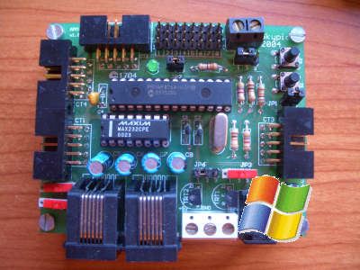
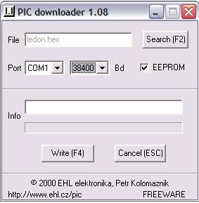

|
Taller de Robótica CampusBot 2005. SESION 3. Software para Windows |
|
 |
A continuación instalaremos las herramienta que vamo a utilizar desde Windows. No utilizaremos las herramientas proporcionadas por Microchip, sino que emplearemos software es libre, por lo que se puede usar, copiar, distribuir, modificar y redistribuir las modificaciones. Las fuentes de todos los programas están disponibles.
El editor que vamos a utilizar es el Programmers Notepad, que tiene licencia BSD. Una descripción completa de su instalación está disponible aquí.
Las herramientas gputils son necesarias para que funcione el compilador. Incluyen un ensamblador, desensamblador, enlazador, etc. seguir los pasos indicados aquí.
El compilador que utilizararemos es el SDCC. Para su instalación seguir los pasos indicados aquí.
Para cargar los archivos compilados (fichero de código máquina, con extensión .hex) en el microcontrolador PIC utilizaremos el PIC Downloader de Shane Tolmie. Su instalación es muy sencilla: sólo es necesario un fichero fichero ejecutable.
Descargar el paquete PIC_downloader.zip. Contiene el fichero ejecutable PIC_downloader.exe. Está escrito en Delphi. Las fuentes están aquí.
Descomprimir el paquete y colocar en fichero PIC_downloader.exe en el directorio que queramos. Crear un icono en el escritorio para acceder directamente a él.
Al ejecutarlo aparecerá una pantalla como esta:
|
 |
Configurar el puerto serie y establecer una velocidad de 38400 baudios. Ya tenemos el software listo para trabajar con el robot!!
Para mover el robot y hacer pruebas de los sensores utilizaremos el programa BotControl.
También utilizaremos el hyperterminal, que es un terminal de comunicaciones. Configurarlo para trabajar a 9600 baudios.